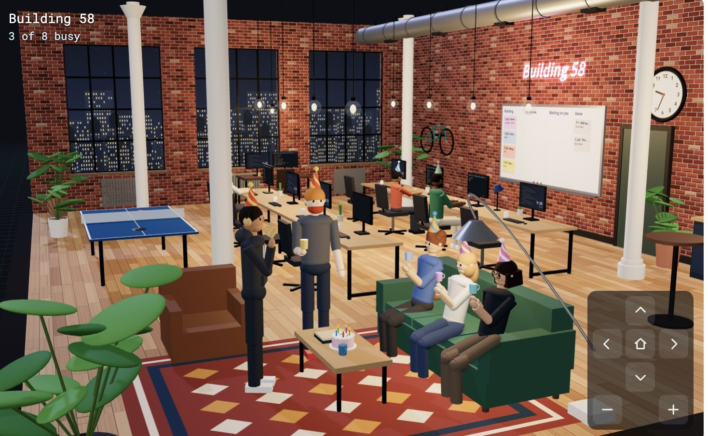
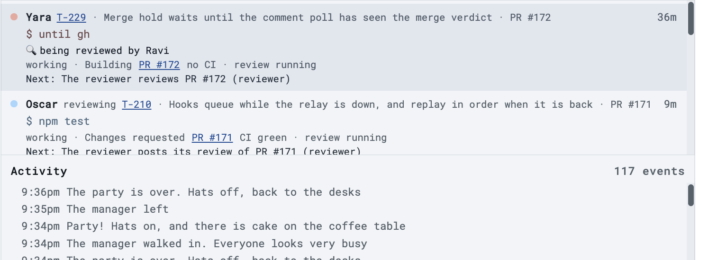
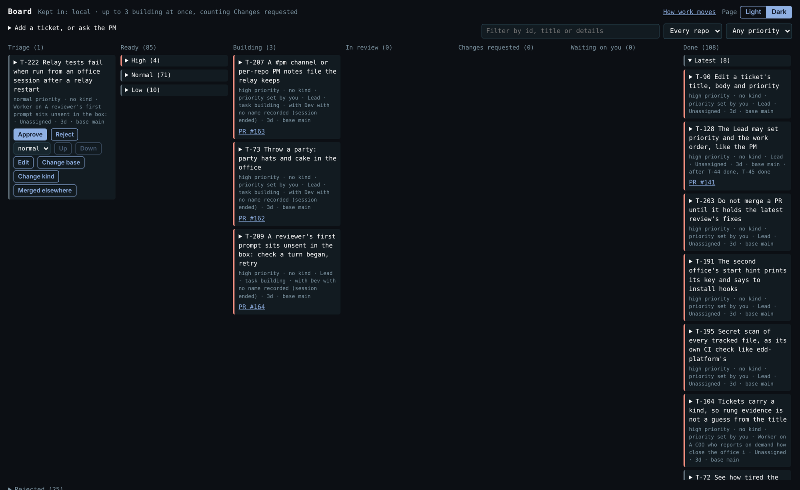
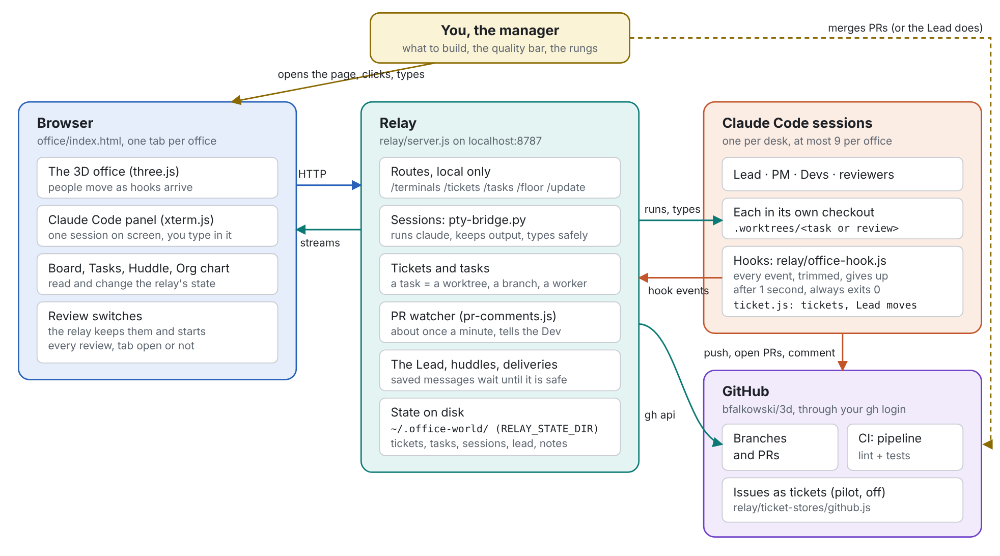

The Office Builds Itself
At 2:48 on Saturday morning, while I slept, my office merged a fix to its own code and restarted itself to run it. A reviewer had found the bug and a worker filed the ticket. Another worker built the fix, a reviewer approved it, and Autopilot merged it. I had approved the ticket days before, and I did nothing else.
The office is the 3D office from my previous post, where each developer is one of my Claude Code sessions. A week ago I started every ticket and merged every pull request myself. This post is about what changed, and what broke when the agents started running their own loop.


How it runs itself
Every change goes through the same loop. A session files a ticket, often for something it ran into while it worked on another one, and the ticket waits for my approval. Autopilot starts a Dev on it in its own copy of the repo. When the pull request is open and CI is green, a separate reviewer session reads it and gives a verdict, merge or fix. A fix goes back to the Dev, and a merge verdict counts only for the exact commit the reviewer read. Autopilot merges that commit.
If the change touched the relay, the program that runs the office, the relay pulls in the new code, waits until no worker is in the middle of a turn, and restarts on it. The workers come back and carry on. That is what makes it self-building: the office changes the program it runs on, and then runs the new version.
None of this was on at the start. In the previous post I described a trust ladder, where the office gets one more step each time it earns it. Over the week I turned the rungs on one at a time: review findings going back to the Dev, the Lead starting and merging work, and then Autopilot running the whole loop. Autopilot still hands a task to me when CI fails, when a review asks for fixes twice, when a change touches the office's rules, or when nothing has moved for 30 minutes.

Inside the relay
The relay is the program that runs an office, and most of the interesting engineering is there. This map is from the manual the office writes for itself.

- A small server with its state on disk. The relay is a Node.js server with no runtime dependencies, and it answers only the office page on my own computer. It keeps the Board, the tasks and the sessions in a folder of JSON files. Each file is written whole and renamed into place, and a lock file keeps a second relay from writing over the first one's state. That is why a second office is just a second relay with its own port and its own folder.
- Sessions that outlive the relay. Each worker is a real
claudeprocess in a pseudo-terminal, in its own git worktree, and the page shows it with xterm.js. The processes belong to a session host, a separate process that the supervisor starts once, and the relay talks to it over a local socket with one line of JSON per message. When the relay restarts on new code, it connects to the host again, gets each session's output so far, and carries on with the same processes. - Hooks up, typing down. Claude Code's hooks tell the relay what each session is doing: a tool call, a permission request, the end of a turn. The hook trims each event, posts it to the relay that started the session, gives up after one second and always exits 0, so it never slows Claude Code down. Going the other way, the relay types into a session only between turns, and sends a long brief as one paste so all of it arrives.
- Tokens, not keys. Each session gets its own token, which lets it file and list tickets and little else, unless I let a role do more, like the Lead moving cards. The relay's own key is taken out of every session's environment.
- Autopilot is a plain function. Autopilot looks at its work every 20 seconds. What to do with each pull request, merge, wait, send back or hand to me, comes from a function with no side effects, so the tests can cover every case without GitHub. The merge is
gh pr merge --match-head-commit, so GitHub refuses it if anything was pushed after the review. - Tests on every change. The office's suite has more than 900 tests, plus browser tests that draw the 3D office in software on a machine with no GPU, and CI runs them on every pull request.
What broke, and what the office did about it
Letting agents run their own loop broke things I had not expected. Each time, a session found the problem and filed it, and the office fixed it. These are the ones worth knowing about if you run agents this way.
Destructive commands have to ask. On the office's first day, a reviewer found that cleaning up a worker's copy of the repo deleted ignored files without asking. Ignored files are where things like a .env file and its API keys live, and nothing would have said they were gone. The worker fixed it in its own pull request, so cleaning up now lists those files and asks first. It saw the same bug in another place and filed a ticket for it, T-7, instead of widening its change. That ticket is the one Autopilot merged at 2:48 on Saturday.
Finished workers fill the office. Early on Friday, Autopilot turned itself off because every desk was taken. Most desks held its own Devs whose work had already merged, and reviewers that had already posted. It stopped a Dev only at the moment its pull request merged, and a Dev was often still busy right then. The Lead filed a ticket with the time, the message and the cause, and the fix merged that evening. Now Autopilot frees one of its own finished workers before it gives up on a start.
A restart can wait forever on one agent. On Saturday morning the office sat still for about two hours. A Dev whose work had merged was waiting at a permission prompt. The relay will not restart while a session is at a question, so the restart waited for the Dev, and Autopilot waited for the restart. Now Autopilot keeps working while a restart waits, and a session stuck at a question for 30 minutes sends its task to me.
The worst bug was not in the code a reviewer reads. The office has a COO, a role the Lead filed a ticket for on Tuesday, borrowed from Open Executive, an open-source project that runs an AI executive team. When I ask, it reports how close the office is to running itself. At first it counted review comments as failures, which made every ticket look flawed. On Saturday I changed it to count what matters for a loop like this: a pull request ships when it merges, and the failure is the office getting stuck. Its next report found that most of the stuck time had one cause. A worker's session could end before its brief was typed in, so the worker never learned what to do. That evening a change merged that saves each worker's first brief until the worker starts on it, and the office has not had a stalled worker since.
A system that changes itself needs a way back. The Lead filed this risk itself, in its own words: "a self-written change that breaks the relay takes down every session, including the ones that could fix it." So the office built a rollback. When the relay restarts on new code, a supervisor checks that it comes up and brings its workers back. If it does not, the supervisor goes back to the last commit that worked. The rollback is on now.
A second office
On Sunday morning I started a second office on the same code, with its own relay and its own Board, and gave it a stalled project of mine: edd-platform, a tool for evaluating AI agents. Its PM used the tool the way a new user would and found that the main loop dead-ended once you had diagnosed a failure. By the afternoon the office had merged the changes that close that loop, and for most of the afternoon it merged a pull request about every six minutes.
The two offices also started to learn from each other. The second office's PM suggested a check that a pull request holds its latest review's fixes before it merges, and the first office built it. That day is the next post.
References
- Building58, the office's code, constitution and manual
- An Office for My Claude Code Sessions, the previous post
- Claude Code hooks reference, the events the office's hook reports to the relay
- Claude Code CLI reference. The relay starts each worker with flags from this page, such as
--session-id,--settingsand--model. - Claude Code Remote Control, the official way to use a session on your own computer from a browser or phone. The office does not use it. It runs each
claudein a pseudo-terminal and shows it in the page with xterm.js, and I did not find an official doc for that. - Claude Code on the web, which runs sessions in Anthropic's cloud and not on your computer
- xterm.js, the terminal in the office page
- git worktree, which gives each worker its own checkout
- gh pr merge, and its
--match-head-commitoption that Autopilot merges with - Open Executive, where the COO role came from